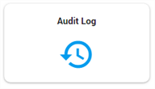
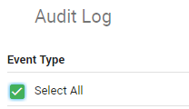
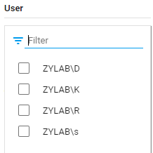
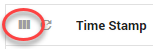

Select Audit Log from the menu on the left side of the screen.
Or select Audit Log on the Home page.

The following overview page appears:

By default, all event types are selected (with Select All).

Deselect the checkbox of Select All, to deselect all event types. Now you can select one or more event types. The logged events will appear in the panel in the middle of the screen.
You can filter the logged events by selecting a user, defining a time frame and/or defining the scope.
-
By default, all users are selected.
Click Select Users to select one or more users. If there is a long list of users, you can filter that list (type the name of a user in the Filter field).
-
Click the default date range to change it. Click OK when done.

-
Click Specify Document ID to define the scope.

Click on a logged event in the middle of the screen, to view the details of that event.

Click Refresh to update the list with logged events.

You can adjust the width of the columns.
Select Reset column sizes to return to the default settings.

Drag&drop colomn headers from left to right and vice versa.
Adjust the page size.

Download the resulting overview list as CSV.